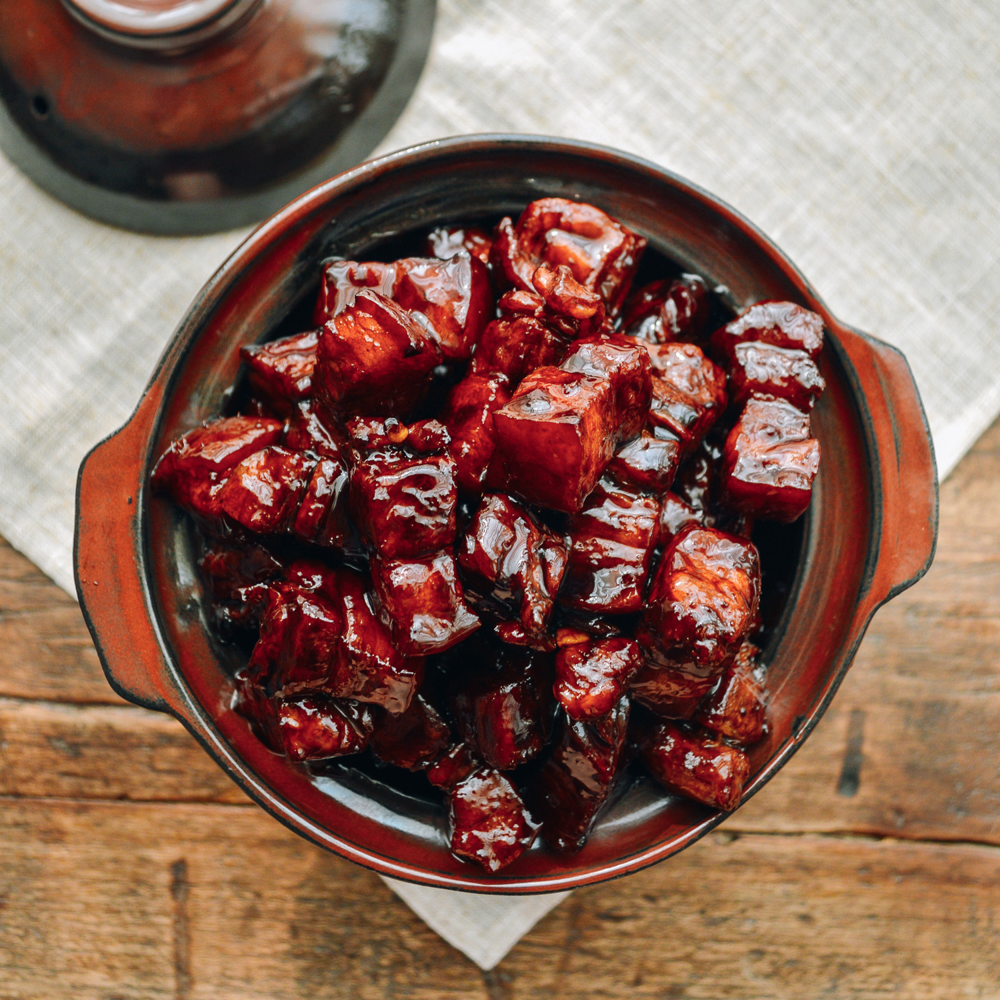

Braised Pork Belly

Description
This popular pork belly dish know as Hong Shao Rou is known in English as Red Braised Pork Belly. Pork belly chunks are braised
over a long period of time with soy sauce, rice wine, sugar and spices to create a complex taste that ensures the skin and fat
melts easily in your mouth without it becoming gelatinous.
This recipe has been taken from the wonderful people at "Red House Spice". Unfortunately their site has much too many ads for it
to be readable especially for smaller screen sizes. I have thus transported the recipe onto this page to create a more simplified
page.
The link to the page is here: Original Page
Ingredients
- 600g pork belly
- 250 ml Shaoxing rice wine
- 2 tablespoon light soy sauce
- 1 tablespoon dark soy sauce
- 5 slices ginger
- 2 star-anise
- 2 bay leaf
- 20g rock sugar
Steps
- Blanch the pork
- Cut pork belly into 2-3 cm chunks
- Put into a pot then fill with cold water. Boil over high heat.
- After it starts boiling, drain the meat in a colander and rinse it under running water
- Braise the pork
- Put the pork back into the cleaned pot
- Pour in Shaoxing rice wine until it barely covers the meat (Add hot water if needed)
- Then add light soy sauce, dark soy sauce, ginger, start anise and bay leaves
- Bring the liquid to a full boil. Cover the lid and leave to simmer over low heat for 1-1.5 hours
- During this time stir the meat around a few times
- The meat is tender when you can pierce it with a fork
- Thicken the broth
- Uncover the pot. Add rock sugar then turn the heat up to the highest
- Leave to boil fiercely whilst stirring from time to time to ensure each piece gets covered until the broth reduces to just enough to cover the bottom of the pot
- Serve immediately with plain steamed rice
- Store and reheat
- The cooked pork belly can be stored in the fridge for up to three days or in the freezer for 2 months
- Reheat in a pot over low heat. Add a little water to heat the pork thoroughly
Notes
- Proper Shaoxing rice wine should contain very little salt (e.g. 0.08 salt per 100ml)
- Use a small pot so you don't need to add too much water to cover the meat
- If the liquid becomes too little, add a small amount of hot water to prevent burning(but no need ot reach the original volume)